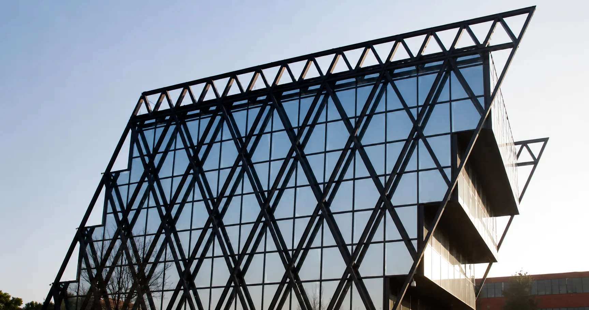

Per il gruppo Manni mi sono occupato della strategia social su LinkedIn e Facebook, per la capogruppo e per le quattro subholding (Isopan, Manni Sipre, Manni Green Tech, Manni Energy). Sono stato inoltre Project Manager della Fondazione Giuseppe Manni: organizzazione degli eventi e gestione del sito.

Manni Group è un gruppo industriale con una capogruppo e quattro subholding, ognuna con un proprio mercato e un proprio pubblico: Isopan (pannelli isolanti), Manni Sipre (componenti in acciaio per l'edilizia), Manni Green Tech (sistemi costruttivi sostenibili), Manni Energy (servizi energetici industriali). A questo si aggiunge la Fondazione Giuseppe Manni, ente che porta avanti l'impegno culturale e formativo della famiglia.
Cinque voci diverse che condividevano lo stesso DNA. Il lavoro era tenere insieme questa coerenza, dando però a ciascun brand il tono giusto per il proprio interlocutore.
Piani editoriali e contenuti per i canali LinkedIn e Facebook della capogruppo e delle quattro subholding. Una linea editoriale comune che permetteva al pubblico di riconoscere il gruppo a colpo d'occhio, con declinazioni distinte per i contenuti tecnici e di settore di ognuna.
Isopan parlava al mondo dell'edilizia e dei sistemi costruttivi; Manni Sipre alla filiera dell'acciaio e ai costruttori; Manni Green Tech ai progettisti e al mondo della costruzione sostenibile; Manni Energy alle aziende industriali interessate a efficienza e gestione energetica. Per ciascuno, una voce calibrata sull'interlocutore reale.
I canali della capogruppo lavoravano sulla voce corporate e di employer branding: visione di gruppo, persone, iniziative trasversali, sguardo industriale d'insieme. Erano il punto di ingresso per partner, candidati e interlocutori che volevano inquadrare l'azienda prima ancora del singolo prodotto.
Per la Fondazione Giuseppe Manni ho ricoperto il ruolo di Project Manager. Mi sono occupato dell'organizzazione degli eventi (concept, coordinamento, gestione fornitori, comunicazione) e della gestione del sito ufficiale come strumento informativo e di ingaggio per le iniziative della Fondazione.
Il lavoro teneva insieme due piani: una parte editoriale e digitale costante sul sito, e una parte progettuale sugli eventi, che aveva tempi e ritmi diversi a seconda della stagione e delle iniziative in corso.